Painting on Tilemaps
The following details the steps and tools for painting Tiles on a Tilemap. However, if you are painting an Isometric Tilemap, refer to Creating a Tile Palette for an Isometric Tilemap for more specific information.
Tile Palette window
To open the Tile Palette window, go Window > 2D > Tile Palette .
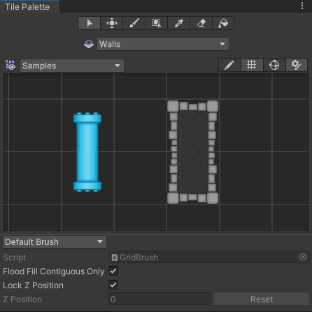
The Tile Palette window.
Selecting the Active Target
To begin painting with TilesA simple class that allows a sprite to be rendered on a Tilemap. More info
See in Glossary, select the TilemapA GameObject that allows you to quickly create 2D levels using tiles and a grid overlay. More info
See in Glossary you want to paint on from the Active Target dropdown menu in the Tilemap Palette window. Tilemaps created in the SceneA Scene contains the environments and menus of your game. Think of each unique Scene file as a unique level. In each Scene, you place your environments, obstacles, and decorations, essentially designing and building your game in pieces. More info
See in Glossary’s hierarchy are automatically added to the dropdown menu. Only the currently selected Active Target is affected by the Tile Palette painting tools.
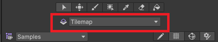
The Active Target dropdown menu (highlighted).
Hover over an option in the Active Target dropdown menu to reveal toggle options to the left of its name. Refer to the table below for their different functions.

Active Target toggle options.
| Option | Function |
|---|---|
|
|
Selecting this will toggle the visibility of the target in the Scene ViewAn interactive view into the world you are creating. You use the Scene View to select and position scenery, characters, cameras, lights, and all other types of Game Object. More info See in Glossary. |
|
|
Selecting this will ping the target in the Hierarchy Window. This will help to identify the target in that window. |
Tile Palette toolbar
Paint on the active Tilemap with the painting tools from the Tile Palette toolbarA row of buttons and basic controls at the top of the Unity Editor that allows you to interact with the Editor in various ways (e.g. scaling, translation). More info
See in Glossary at the top of the Tile Palette window (highlighted below). These tools can also be used to edit and paint on the Tile Palette itself.
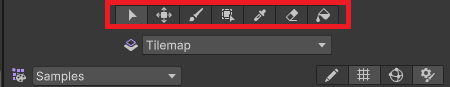
The Tile Palette toolbar.
Tile Palette tools and shortcuts
The following shows the shortcuts for each Tile Palette painting tool. Select the respective tool for more information about their specific functions.
| Tool | Shortcut key | |
|---|---|---|
|
Select Tool |
S | |
|
Move Tool |
M | |
|
Paintbrush Tool |
B | |
|
Box Fill Tool |
U | |
|
Picker Tool |
I | |
| To temporarily switch to the Picker Tool when using the following Tools: | ||
| Paintbrush Tool | Ctrl+B (macOS: Cmd+B) | |
| Box Fill Tool | Ctrl+U (macOS: Cmd+U) | |
|
Eraser Tool |
D | |
| To temporarily switch to the Eraser Tool when using the following Tools: | ||
| Paintbrush Tool | Shift+B | |
| Box Fill Tool | Shift+U | |
|
Flood Fill Tool |
G | |
Select Tool
Use the Select Tool to select a Tile on the Active Tilemap, or hold and drag it over multiple Tiles to select more at once.

Selecting the Select Tool.
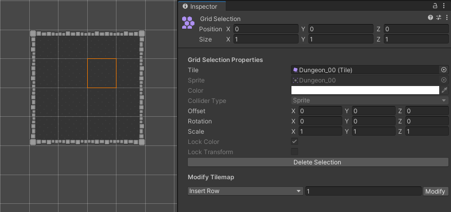
Selecting a Tile on the Tilemap with the Select Tool.
When you select a Tile(s) with the Select Tool, the selected Tile(s)’ property details are shown in the InspectorA Unity window that displays information about the currently selected GameObject, asset or project settings, allowing you to inspect and edit the values. More info
See in Glossary window in two main property sections - the Grid Selection Properties and the Modify Tilemap properties. Refer to the Select Tool page for more information about these properties.
After selecting Tiles with the Select Tool, you can then use the Move Tool to move selected Tiles to a different position on the Tilemap.
Move Tool
Use the Move Tool to move the Select Tool’s Tile selection. Note that the Move Tool cannot select Tiles by itself. Hold and drag selected Tiles to another position on the Tilemap.
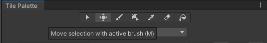
Selecting the Move Tool.
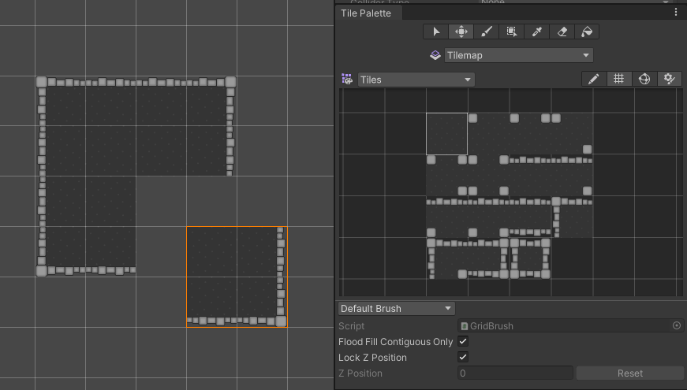
Moving Selected Tiles (highlighted in orange) with the Move Tile.
Paintbrush Tool
Use the Paintbrush Tool by first selecting a Tile in the Tilemap Palette, or hold and drag it over multiple Tiles to select more at once. Then click on any location on the Tilemap in the Scene to begin painting with your selected Tiles. Hold Shift while using the Paintbrush Tool to temporarily switch to the Erase Tool.

Selecting the Paintbrush Tool.

Selecting a Tile from the Tilemap Palette (right) and painting it onto the Tilemap (left) with the Paintbrush Tool.
To select and paint with Tiles that are already on the Tilemap instead of the Tilemap Palette, hold Ctrl as you select Tiles on the Tilemap with the Paintbrush Tool. This temporarily switches it to the Picker Tool to pick Tiles from the Tilemap directly for painting.
Box Fill Tool
Use the Box Fill Tool by first selecting a Tile in the Tilemap Palette, or hold and drag over multiple Tiles to select more at once. Then hold and drag the Box Fill Tool over the Tilemap to draw a rectangular shape which automatically fills with the selected Tile(s). Selections made with the other tools (such as the Select Tool) can also be used with the Box Fill Tool.
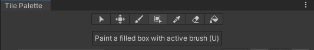
Selecting the Box Fill Tool.
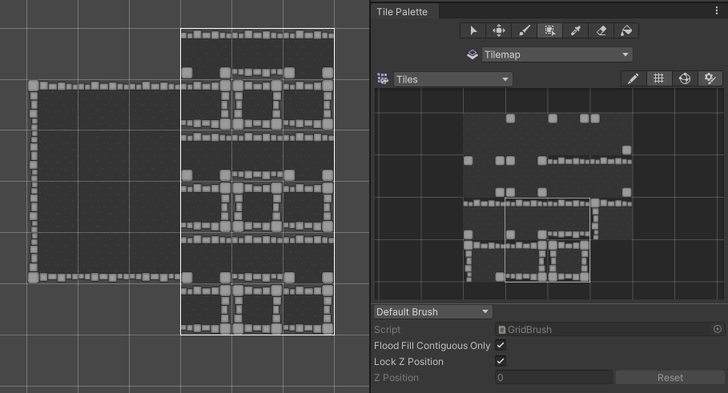
Selecting Tiles from the Tilemap Palette (right), then painting with the Box Fill Tool (left) on the Tilemap.
Picker Tool
Use the Picker Tool to pick a Tile from the Tilemap or Tilemap palette, or hold and drag over multiple Tiles to select more at once. The active tool switches to the Paintbrush Tool once a selection is made, to allow you to immediately paint on the Tilemap with the selected Tile(s).
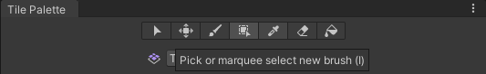
Selecting the Picker Tool.
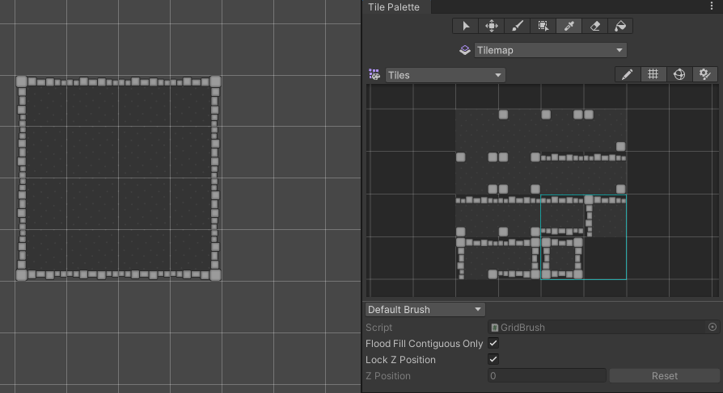
Selecting Tiles on the Tilemap Palette with the Picker Tool (highlighted in light blue).
Eraser Tool
Use the Eraser Tool to erase Tiles from the Tilemap by selecting them while the tool is enabled. To erase a larger area at once, hold and drag the Eraser Tool to the desired size in the Tilemap Palette, then paint over Tiles you want to delete on the Tilemap.

Selecting the Eraser Tool.
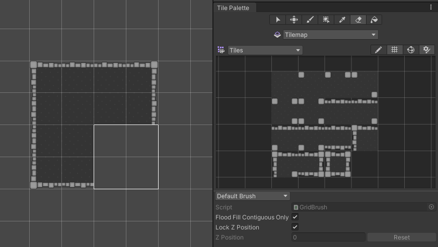
Erase Tiles in the selection.
Flood Fill Tool
Use the Flood Fill Tool by first selecting a Tile from the Tile Palette, then use the tool to fill a contiguous area of empty cells or identical Tiles with the selected Tile. This tool can only be used with a single selected Tile, and cannot be used with a selection with multiple Tiles.
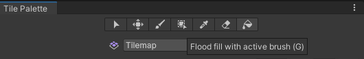
Selecting the Flood Fill Tool.
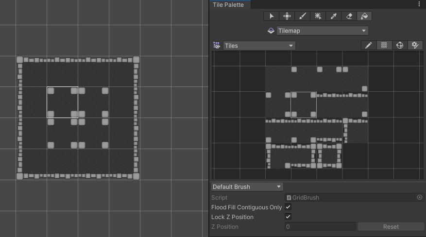
Select the Tile from the Tile Palette (left) to automatically Flood Fill the four identical Tiles in the middle of the Tilemap (right).
Active Brush inspector
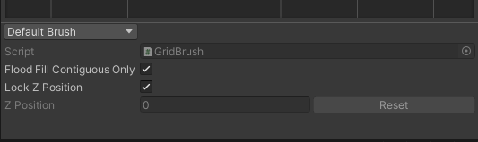
The active Brush Inspector window.
The Active Brush Inspector window is found at the bottom of the Tile Palette window and is minimized by default. It allows you to change the current active Brush and its properties. Drag the bottom toolbar upwards to expand it the window.

The Active Brush dropdown menu, with Default Brush selected by default.
Use the dropdown menu to change the active Brush to the different Brushes available in your project, such as custom Scriptable Brushes.
Brush preview and other shortcuts

A preview of the picked Tile is shown at the cursor.
When painting with the active Brush on a Tilemap in the Scene view, a preview of the picked Tile(s) is shown at the cursor location. This is the Brush preview that helps you to visualize the placement of the Tiles before painting. Note that brush previews with multiple Tiles may look different when the cursor hovers over neighboring rows or columns. This is more pronounced on Hexagonal Tilemaps.
The following shortcuts allow you to change the orientation or z-position of the picked Tile, which is visually reflected in the Brush preview.
| Shortcut Key | Function |
|---|---|
| [ | Rotate the active Brush clockwise. |
| ] | Rotate the active Brush anti-clockwise. |
| Shift+[ | Flip the active Brush along the x-axis. |
| Shift+] | Flip the active Brush along the y-axis. |
|
- (Only available when Lock Z Position is disabled) |
Increase the z-position of the active Brush. This is only available when Lock Z Position is disabled for the active Brush. |
|
= (Only available when Lock Z Position is disabled) |
Decrease the z-position of the active Brush. This is only available when Lock Z Position is disabled for the active Brush. |
| Shift+B | Switch to the next Brush in the Brush list |
| Shift+Alt+B | Switch to the previous Brush in the Brush list |
Tilemap Focus
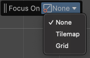
The Tilemap Focus dropdown menu.
Use the Tilemap Focus mode to focus on a specific Tilemap or Grid GameObjectThe fundamental object in Unity scenes, which can represent characters, props, scenery, cameras, waypoints, and more. A GameObject’s functionality is defined by the Components attached to it. More info
See in Glossary by fading out other GameObjects in the Scene. This is useful when working with multiple Tilemap layers to avoid confusion and clutter. The Tilemap Focus mode will be activated on the current Active Target.